About this Guide
The Configuration Tool allows an administrator to configure the details for everything on the shop floor terminals. This includes location details, routes, parts, and operator data. This guide will help an administrator with how to use the tool.
How to navigate the Configuration Tool
Every screen in the Configuration Tool is reached from the five category tabs in the far-left rail. Those are the Plant, Parts, Quality, Ops, and System tabs. Selecting a category expands its list of pages beneath the rail; clicking one of those opens the page.
1Plant
Contains Plant Hierarchy. This is where all of the locations are organized. You can configure terminals and attributes of all of the locations.
2Parts
Contains Item Master, Operation Templates, and Tools. This is where parts and their routes are managed. Operation Templates are where you configure a step of a route. Tools and dies and their attributes are defined here.
3Quality
Contains Quality Specs and Defect Codes. Quality Specs set minimum requirements a part must meet. Defect Codes are standardized reasons for why a part is discarded.
4Ops
Contains Downtime Codes and Shift Schedules. Downtime Codes are for classifying why a machine or line stopped. Shift Schedules are the shifts that operators work when running the plant. Shift Overrides adjust a single shift on a single day for one piece of equipment.
5System
Contains Users, Audit Log, Failure Log, and PLC Devices. Users store the initials of the operators that log into the plant floor terminals. The Audit Log and Failure Log store past data of every change and failure respectively.
Sign In button,
which elevates you for protected actions via Active Directory. Routine configuration is done as the signed-in operator.Plant Hierarchy
The plant hierarchy organizes the locations of the plant into a tree. It is organized by specificity and goes from the entire Enterprise all the way down to a specific terminal. The format is: Enterprise → Site → Area → Line/Cell → Terminal.
What
Defines every physical and logical location — facilities, die-cast machines, trim shops, machining & assembly lines, terminals, warehouse and shipping — and the mounted-tool and attribute data on each.
When
At initial commissioning, and whenever a line is added, a machine is re-arranged, a terminal is installed, or a die is mounted/unmounted.
Why
Terminals zone up to their line so the shop floor knows which LOTs are eligible where; machine attributes feed OEE; the mounted tool ties a die to the machine that's running it.
Page Navigation
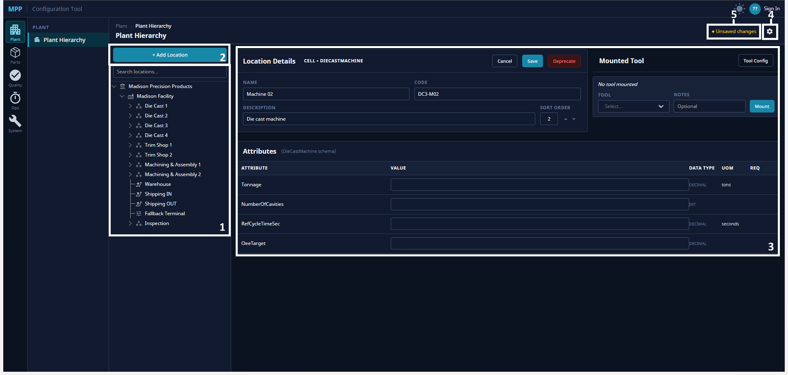
1. The Location Tree
This is how all of the locations are organized. Some locations have a right-pointing arrow to the right of them. This can be clicked on to expand the location and reveal its children. The arrow can be clicked again to collapse it. Clicking a location’s name selects it, and its information is shown on the right. Above the tree is the search input, which filters the tree to locations matching the text you type. While a filter is active, the matching locations are listed flat — their children are not shown.
2. Add Location Button
Clicking this button will create a new location. It is placed in the hierarchy as a child of whichever location is selected when you press the button. Keep in mind that while its sort order can be changed, its parent cannot.
3. Location Details
This is the main substance of the page. The details shown are those of the location selected in the tree. Click a field to edit it. At the top there are the Cancel, Save, and Deprecate buttons.
- The Cancel button will discard all changes that have been made before the last save.
- The Save button will save all of the changes that have been made, allowing you to freely change locations again.
- The Deprecate button will soft-delete the location. It won't be visible anymore from the location tree.
4. Location Definitions Popup
Clicking this gear icon opens the Location Type Definitions popup.
5. Dirty Indicator
This indicates that there has been a change to the selected location. You will be unable to switch locations until the changes have either been saved or discarded. Attempting to select a different location will open an Unsaved Changes popup.
Creating a new location
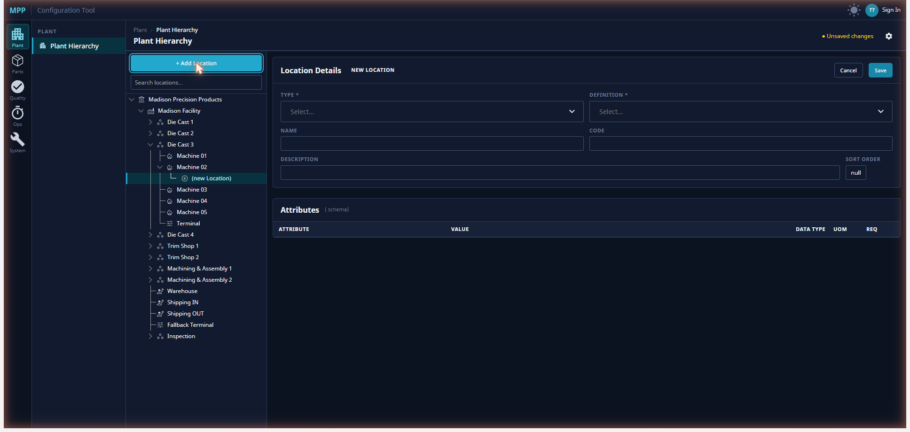
- In the tree, select the parent the new location belongs under (e.g. a Die Cast area to add a machine, or a line to add a terminal).
- Click
+ Add Location. A (new Location) node appears under the parent and the editor switches to a blank form. - Pick a Type, then a Definition. The Type you choose determines which Definitions are available, and the Definition supplies the attributes listed below.
- Enter Name and Code. Names carry meaning in this system (they drive role and default screen), so name deliberately; the Code is the stable identifier.
- Set Sort Order to position it among its siblings, fill any required
attributes, then click
Save.
Configuring a terminal
A terminal is a shop-floor station. Its Attributes (the Terminal schema) are what make the physical station behave correctly. It controls which screen it boots into, which printer and scanner it uses, and how it closes out work. Getting these right is essential: an unconfigured terminal falls back to plant-wide defaults and misbehaves on the floor.
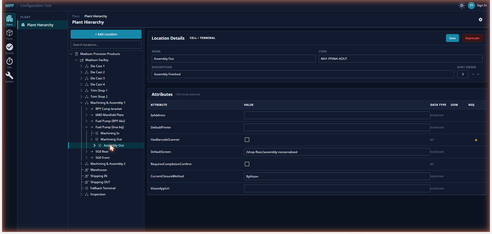
DefaultScreen and CurrentClosureMethod are set;
IpAddress and DefaultPrinter are still blank — exactly the
fields to fill in before the station goes live.| Terminal attribute | Why it matters |
|---|---|
| IpAddress | The terminal's network identity. It's how a session recognizes which terminal it's running on and binds to that station's line, queue and devices. An unregistered or blank IP drops to the plant-wide Fallback Terminal, which breaks eligibility and shows plant-wide queues. Set it to the station's actual IP. |
| DefaultPrinter | The label printer this station prints to. Point it at the printer entity attached beneath the terminal (if it has one). |
| HasBarcodeScanner | Whether the station has a scanner — drives scan-vs-manual entry on the floor. Schema-dependent: present because the terminal's type definition declares it. |
| DefaultScreen | The Perspective view the terminal opens to at session start (e.g. /shop-floor/assembly-nonserialized). This effectively sets the station's role. |
| CurrentClosureMethod | For assembly-out terminals, the active pack-out mode: ByCount / ByWeight / ByVision. Schema-dependent: only terminals whose definition declares it expose this. |
| RequiresCompletionConfirm | Whether the terminal prompts for an explicit completion confirmation before finishing work. |
| VisionAppUrl | The external vision web-app URL embedded in the ByVision assembly screen. |
HasBarcodeScanner and CurrentClosureMethod come from the
type definition, so which attributes a terminal
exposes depends on how its definition is set up.Attaching a printer
Any terminal with a physical label printer gets a Printer location as a child
beneath it. Modeling the printer as its own location keeps the endpoint and model with the
station that owns it, and lets the terminal's DefaultPrinter resolve to a real
device.
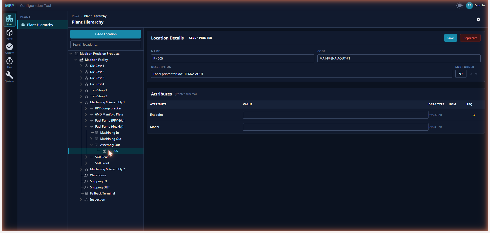
Endpoint (required) and Model.- Select the terminal in the tree, then click
+ Add Location. - Set Type = Cell, Definition = Printer.
- Name it and give it a code (convention: <TERMINAL>-P1, e.g. MA1-FP6NA-AOUT-P1).
- Set Endpoint (required — the Zebra target as IP:port
or a print-queue name) and Model (drives label-template selection), then
Save. - Back on the terminal, set
DefaultPrinterso its label jobs route to this printer.
Mounting a tool & retiring a location
- Mount a die: with a machine selected, pick the tool in the
Mounted Tool panel, add an optional note, and click
Mount. UseTool Configto jump to the die's full record. - Retire: click
Deprecateto soft-delete a location. Its children re-anchor to the parent; nothing is lost from history.
Location Type Definitions
This is the schema layer behind the plant hierarchy. The attributes
a location carries aren't hard-coded — they're defined here, per ISA-95 tier and per
definition. It's what lets a Die Cast machine carry Tonnage while a terminal
carries an IP address, a printer, a scanner flag and a closure method — each type with
exactly its own fields and nothing else.
What
For each ISA-95 tier (Enterprise, Site, Area, Work Center, Cell), the named definitions available and the attribute schema each one carries — attribute name, data type, required, default, UOM.
When
At commissioning, or when a new class of equipment/terminal is introduced, or an attribute must be added to a type (e.g. a new terminal setting).
Why
It makes the hierarchy polymorphic and safe: every location of a given type shares one schema, so there are no free-text columns and no drift between two machines of the same kind.
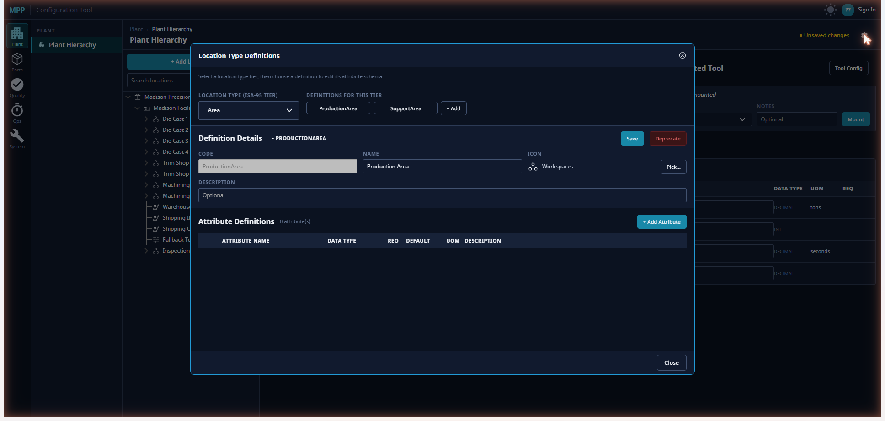
Define a type or add an attribute
- Choose the Location Type (ISA-95 tier), then a definition in that tier —
or click
+ Addto create a new definition. - Set the Name, an Icon (
Pick…) and an optional description. The Code is the stable identifier and can't be changed later. - Under Attribute Definitions, click
+ Add Attributeand set the attribute's name, data type (NVARCHAR / BIT / INT / DECIMAL), required flag, default and UOM. Reorder with the arrows. These are the attributes that appear when you create a location under this definition. - Click
Save. Every existing and future location of this type immediately exposes the field in its Attributes grid.
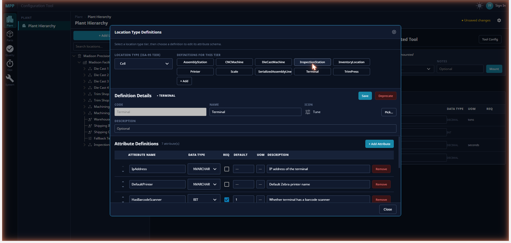
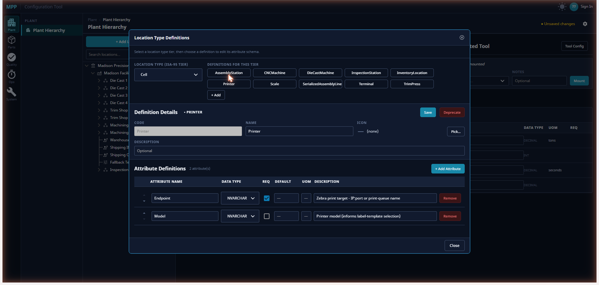
Endpoint (the Zebra target — IP:port or a
print-queue name) and a Model (which informs label-template selection).
Printers are placed as child locations under the terminals they serve — see
Attaching a printer.Item Master
The Item Master is the catalog of every part number the plant handles — raw castings, machined sub-assemblies, purchased components and finished goods — and the packaging, routing, bill-of-materials, quality and line-eligibility data attached to each. It is the single most-configured screen in the tool.
What
Part identity plus five configuration tabs: Container Config, Routes, BOMs, Quality Specs and Eligibility.
When
Whenever a new part is introduced, a route or packaging changes, a BOM is revised, or a part becomes eligible on a new line.
Why
Routes drive the shop-floor queue and part identity; BOMs drive consumption/genealogy; eligibility controls where a part is allowed to run.
Navigation
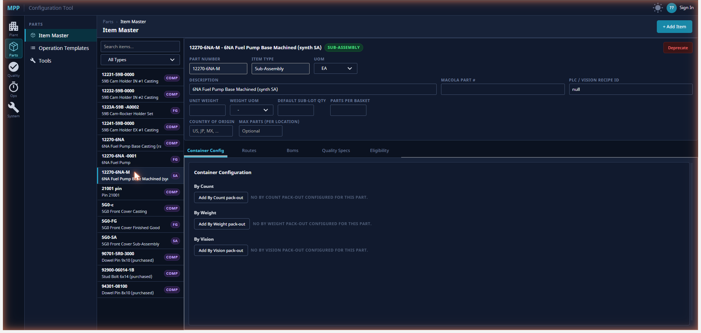
1. Item List
Clicking on an item in this list selects the item for it to be viewed and edited. You can also filter the list to include only a certain type of item (like Raw Material, Component, etc.) There is also a search input to filter by name/description.
2. General Details
Contains some generic configurable details of the item.
- Part Number and Item Type categorize the part. They are set when the part is created and can't be changed later.
- UOM, or Unit of Measure, is the counting unit for the part (for example EA). It is what piece counts and BOM quantities are expressed in. Measurement units for quality checks are set per attribute on the Quality Spec, not here.
- Description gives the user more detail on the part to better identify it.
- Macola Part # is used for integration with Macola. It is optional.
- PLC / Vision Recipe ID is the recipe identifier handed to the PLC and vision systems for this part. It is optional, and only needed on parts that run at a machine-integrated station.
- Unit Weight and Weight UOM give the weight of a single piece and the unit that weight is in. They are used by weight-based pack-out, where the scale divides total weight by unit weight to derive a count.
- Parts Per Basket is the capacity of one basket — one LOT is one basket carrying one LTT label, so this is effectively the maximum piece count for a LOT of this part. It applies at Die Cast, Trim, and intermediate Machining. Exceeding it at Die Cast raises the over-headroom warning rather than blocking the entry.
- Country of Origin sets which country the item is from if the item was imported.
- Max Parts (Per Location) caps how many pieces of this part may sit at any one location at a time, summed across every open LOT there. Leave it blank for no cap. It is enforced when loose stock is received; LOTs minted by production are not subject to it.
3. Tabs
There are 5 tabs here that allow for more configuration. Some tabs may not be required to configure depending on the type of part that is being edited. See below for more information.
4. Add Item Button
Clicking this button opens a popup to create a new item.
5. Item Badges
All items have a type badge such as Component or Finished Good. They will be displayed here. The type of the item is set when the item is first created and can't be changed afterwards.
Add a part
- Click
+ Add Itemin the top-right corner, then set Part Number, Item Type and UOM — Item Type gates which routes and areas the part may later use. - Fill the identity fields (description, weights, Macola part #, recipe ID,
packaging) and then click
Create Item. - Configure the five tabs below as needed (they're described next). Each tab saves independently.
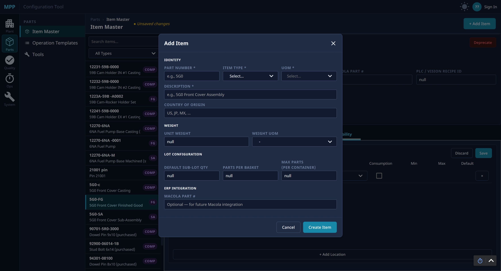
Container Config
Defines how finished parts are packed out — By Count, By Weight, or
By Vision. Use Add By Count / By Weight / By Vision pack-out to
configure the method that applies; a part with none configured shows the "not
configured" placeholder. This is what the pack-out station enforces at run time.
Make sure to save changes using the save button at the top right of the section.
Routes Draft Published
The route is the ordered list of operation steps a part travels — and, in this system, the source of truth for the shop-floor queue and terminal identity. Each step pairs an operation category (Die Cast, Trim, Machining & Assembly) with the operation template that governs it.
To create a route, click + New Version. This will create a draft of a new version (all old versions will be saved).
From here, you can click + Add Step to add a new step to the route. The attributes of all the routes can also be configured.
Pressing the arrows on each element in the list will reorder the steps of the route. You can also change the
name and effective from date if needed.
If you want to delete the current draft, click Discard Draft. Click the Save Draft button to save changes
to the draft if you need to come back to it later. Once the draft is finished, click Publish to finalize the draft. From
here, this draft won't be editable and any new changes will require creating a new draft again.
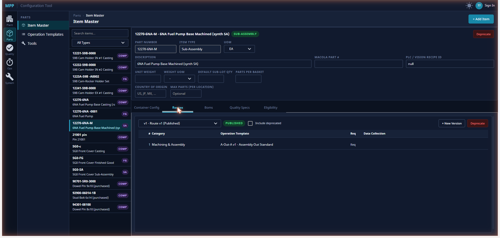
Publish.
To revise a live route, click + New Version — you never edit a published
version in place.BOMs Published
The bill of materials lists the child components a part consumes, with quantity per and UOM. BOMs use the same draft system as Routes, meaning they are versioned and effective-dated.
To create a new BOMs draft, click + New Version.
From here, you can click + Add Component to add a new component to the BOMs. The Component,
Qty Per, and UOM attributes of each component can also be configured.
Pressing the arrows on each row reorders the component list. You can also change the
effective from date if needed.
If you want to delete the current draft, click Discard Draft. Click the Save Draft button to save changes
to the draft if you need to come back to it later. Once the draft is finished, click Publish to finalize the draft. From
here, this draft won't be editable and any new changes will require creating a new draft again.
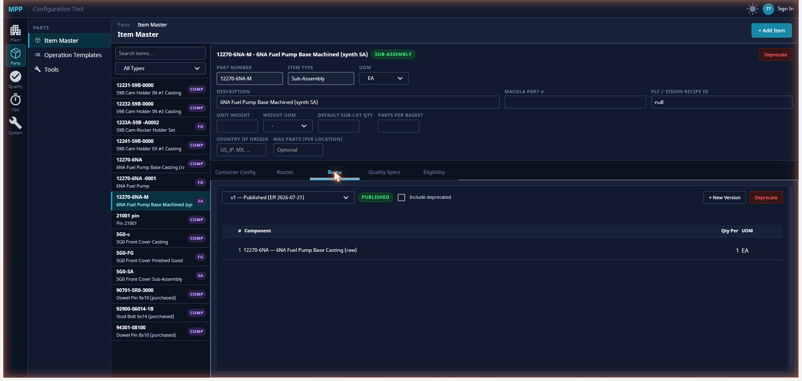
Quality Specs
The Quality Specs tab shows all of the Quality Specs that have been linked to this item. These Quality Specs define target measurements for this item. Quality Specs are not created on this tab. Instead, they are defined at the Quality Specs screen and linked to the item from there.
Eligibility
The Eligibility tab controls where the part may run. This tab does not use a draft/published system like Routes and BOMs.
You can add a new eligible location by clicking + Add Location at the bottom. Doing this will add a new row where you can set the
Location to one of the terminals. These terminals are defined in Plant Hierarchy. You can also toggle
Consumption to set if the part gets consumed at this location.
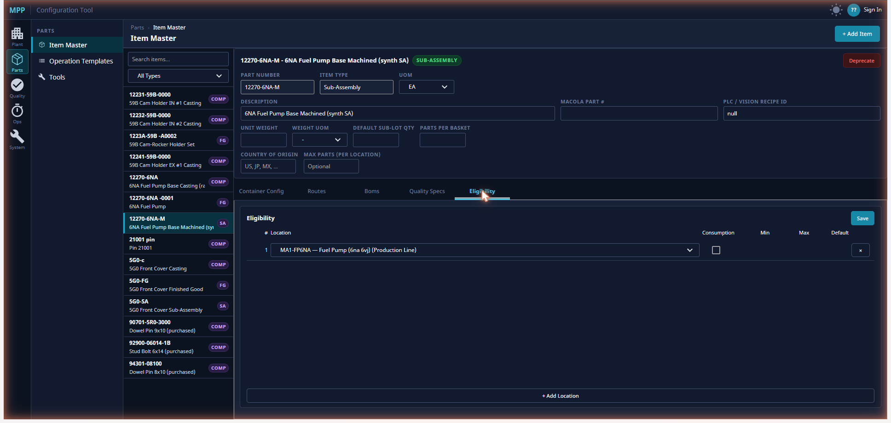
+ Add Location to grant a new line, then Save.Operation Templates
An operation template is a reusable definition of what happens at a step of a route — its operation type and the data the operator must collect there. Routes reference these templates rather than redefining behavior part by part.
What
Named, versioned templates grouped by operation category — Die Cast, Trim IN/OUT, Machining IN/OUT, Assembly OUT — each with a set of data-collection fields.
When
When a new kind of operation is introduced, or the data captured at an operation needs to change (add a reading, make a field required).
Why
Define the operation once and reuse it across every part's route; versioning keeps historical runs pinned to the template they actually used.
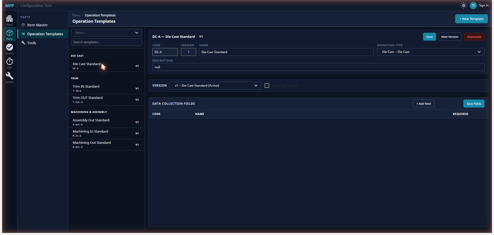
Create or revise a template
- Click
+ New Template, or select an existing one to revise. - Set the Code, Name, and Operation Type (the role this template fills — Die Cast, Machining Out, Assembly Out, etc.).
- Under Data Collection Fields, use
+ Add fieldto add each reading the operator must capture, mark it required if needed, andSave fields. - Use
+ New Versionto change a template that's already in use: it opens an editable Draft copy, andPublishmakes it live. A published version is read-only.Deprecateretires a template, andShow deprecatedbrings retired ones back into the list.
Tools & Dies
Listed in the sidebar simply as Tools, this screen is the registry of dies and cutting tools — their rank, status, cavities, per-tool attributes, and where they're assigned or mounted. It feeds the mounted-tool selection back in the Plant Hierarchy and, ultimately, die-cast traceability.
What
Each die's identity (code, name, tool type, die rank, status) plus Attributes, Cavities and Assignments tabs.
When
When a die is received, re-ranked, sent out for repair (status change), or its cavity layout / assignments change.
Why
Die rank and cavity data govern which die may run a part and how shot output is attributed; status keeps retired dies out of selection.
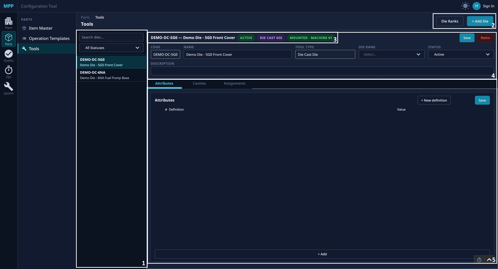
1. Tool List
Select a tool here to begin editing it. To find a specific tool, you can use the search bar that will filter by both its code and description.
2. Add Die & Die Ranks Button
Clicking + Add Die opens a popup where you can configure a new die. Clicking Die Ranks
opens the Die Rank Popup where you can configure merge compatibility. See Configuring Die Ranks below
for more details.
3. Status Badges
These badges give a quick read on the tool. The first shows its current status (Active, Under Repair, Scrapped, or Retired). The second shows its tool type. The third shows the machine it is mounted to. Together they tell you where a tool stands without opening its configuration.
4. General Details
The tool's core identity fields.
- Code is the tool's stable identifier.
- Name is the human-readable name for the tool.
- Tool Type is for when you want to track your tooling. It is currently always set to Die Cast Die. It will later have support for more types of tools, like CNC machining.
- Die Rank is for setting merge compatibility with other tools. This can be configured on the Die Ranks popup.
- Status defines how the tool is doing right now. It can be active, under repair, scrapped, or retired.
5. Tabs
More options for configuration can be found here. This includes creating your own custom attributes, setting cavities, or assigning the tool to a mount.
Add or maintain a die
- Click
+ Add Die; set Code, Name, Tool Type, Die Rank and Status. - On the Attributes tab add any per-die definitions and values; use Cavities to record the cavity layout and Assignments to tie the die to the parts/lines it serves.
- Change Status (e.g. to send a die out for repair) or click
Retirewhen a die leaves service. Filter the list with the status dropdown.
Configuring Die Ranks
Clicking the Die Ranks button in the top-right corner opens the popup where you create die ranks and configure merge compatibility. Add a rank with
+ Add Rank, then give it a code (which must be unique) and a name.
When there are multiple Die Ranks, you can configure how they merge with each other using the table in the center. Clicking on a cell switches its compatibility. The grey squares are not editable because they mirror the top half of the grid.
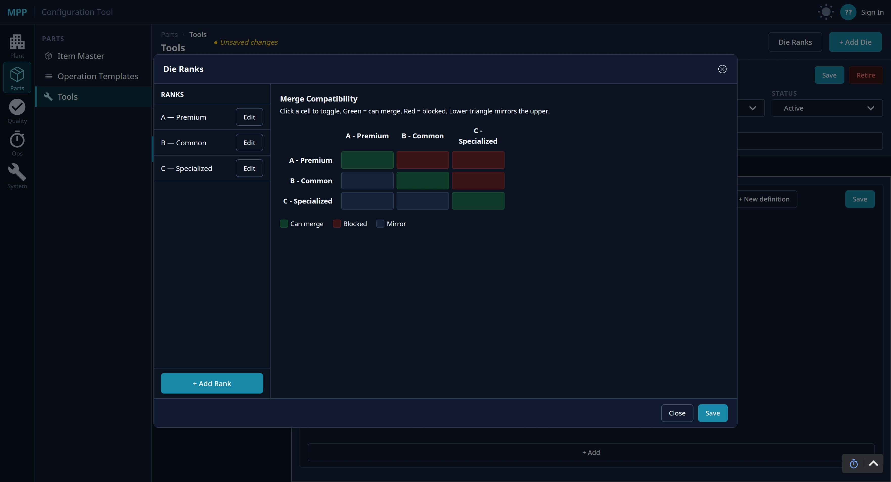
Creating New Attributes
The Attributes tab is where you can create your own custom attributes for Tools. When you
have a tool selected, navigate to the Attributes tab. At the bottom, you can click
+ Add to add a new attribute. This will create a new row where you can set
a pre-defined attribute and a value.
If you don't have the attribute already defined, you can create a new one by pressing
+ New definition in the header of the attributes tab. This will open a popup
where you can configure a new attribute.
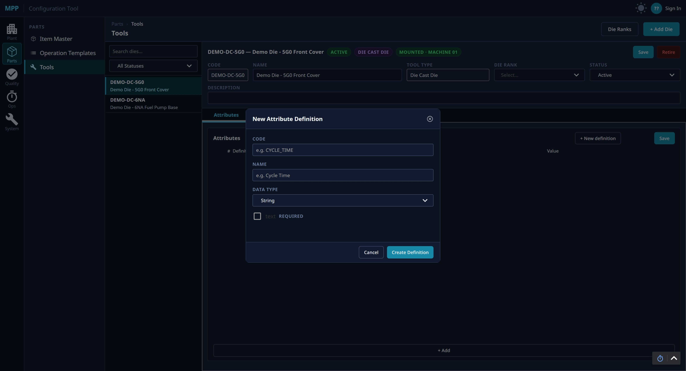
Here there are a few values you must configure.
- Code is the internal name for the attribute.
- Name is the label admins and operators see.
- Data Type is the type of value the attribute stores.
- Required sets whether a value must be supplied for the attribute.
Once you click create, the new definition is available as an attribute option for any tool.
When you have finished configuring attributes, remember to click Save.
Quality Specs
A quality spec is the set of measurements and tolerances a part (or an operation on a part) must meet. Specs are versioned and effective-dated so a tolerance change can be staged without rewriting history.
What
A named spec linked to an item (and optionally an operation template), containing a list of measurement attributes with target and lower/upper limits.
When
When quality introduces a new check, a print revision changes a tolerance, or a spec needs to be linked to a new part/operation.
Why
Shop-floor and inspection screens read the published spec to validate operator entries — it's how out-of-tolerance readings get caught.
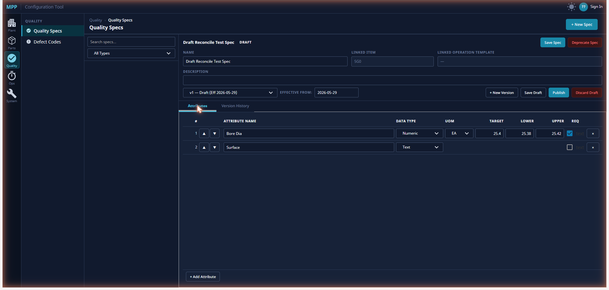
+ Add Attribute adds a
check.Author a spec
- Click
+ New Spec; give it a Name and set the Linked Item (and Linked Operation Template if the check is operation-specific). - On Attributes, add each measurement — name, data type, UOM, and the target/tolerance band — and mark the required ones.
- Set the Effective From date,
Save Draft, thenPublish. Use+ New Versionto revise a published spec; the Version History tab shows every version, its state, and who created it.
Defect Codes
Defect codes are the standardized reasons a part is scrapped or reworked. They're scoped by area so each part of the plant sees the codes relevant to it, and each can be flagged "excused" to exclude it from defect-rate math.
What
A flat, area-scoped list of numbered defect reasons (Soldering, Flash, Short Shot, Bent Pin, etc.), each with an excused flag.
When
When a new defect mode needs tracking, or an existing code's wording, area, or excused status changes.
Why
Operators pick these when logging scrap; excused codes keep out-of-operator-control losses from skewing quality metrics.
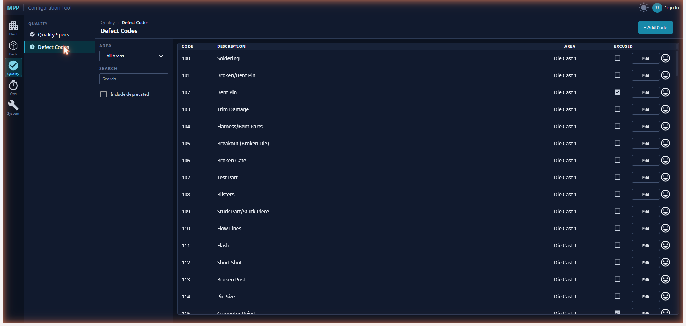
Include deprecated reveals
retired codes. Each row has an Edit action.Add or edit a code
- Click
+ Add Code, orEditon a row. - Set the Code (fixed once created), Description, and Area.
- Tick Excused (excluded from defect rate) if the loss shouldn't count against
quality metrics, then
Save. UseDeprecateto retire a code.
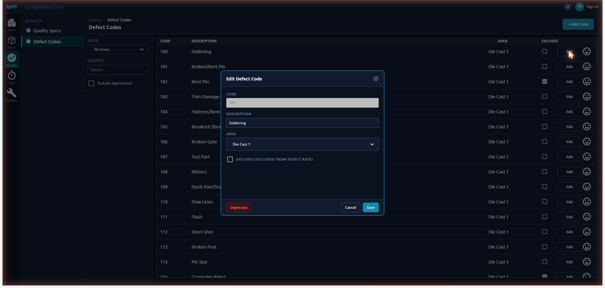
Downtime Codes
Downtime codes classify why a machine or line stopped. Like defect codes they're area-scoped and can be excused, and they additionally carry a reason type (e.g. Break) so scheduled stops are distinguished from unplanned ones.
What
Area-scoped stop reasons with a type and an excused flag — e.g. BREAK1, LUNCH.
When
When standing up downtime tracking for an area, or adjusting the reason list operators choose from.
Why
They drive OEE availability: excused/scheduled reasons don't count against a line the way unplanned faults do.
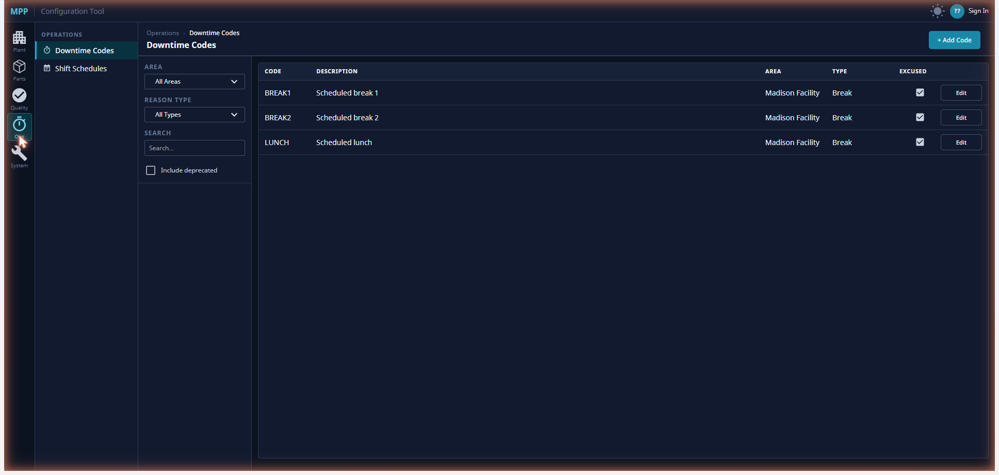
Edit; add new ones
with + Add Code.Shift Schedules
Shift schedules define the working windows the plant runs — their days, start/end times, and the date each definition takes effect. They frame every time-based calculation, from OEE buckets to production reporting.
What
Named shifts (First/Second/Third) with days-of-week, start and end times, and an effective-from date.
When
At start-up, and whenever the plant changes hours, adds/removes a shift, or moves to a new pattern on a future date.
Why
Downtime, OEE and output are all bucketed against the active shift; overnight shifts (e.g. 23:00→07:00) are handled by the start/end pair.
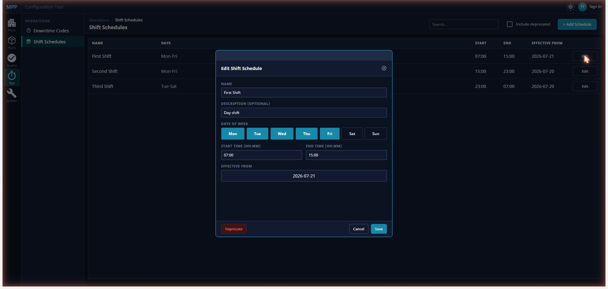
Add or change a shift
- Click
+ Add Schedule, orEdita shift. - Set the Name (and optional description), toggle the days of week it runs, and enter Start and End in HH:MM.
- Set Effective From — future-date it to stage a change — then
Save.Deprecateretires an old pattern while keeping past reporting intact.
Shift Overrides
A shift override extends or shortens one shift on one day for one piece of equipment. Anything without an override runs the global shift schedule. Use it for the exception — an overtime run, an early stop — rather than editing the schedule everyone else follows.
What
A dated, per-equipment replacement for a shift's start and end times, with a reason.
When
When one press or line works different hours than its schedule says on a particular day.
Why
Production and downtime are attributed to whichever shift was actually running. Without an override, an overtime hour lands in the wrong shift's numbers.
Add an override
- Click
+ Add Override. - Choose the Equipment (a press or a line) and the Shift to override.
- Set the Date — this is the day the shift starts on, which matters for an overnight shift that runs past midnight.
- Enter Start and End in 24-hour HH:MM. An end time earlier than the start time means the shift crosses midnight.
- Type a Reason (for example, an overtime run to cover a Honda pull) and click
Save.
The list can be narrowed with the equipment dropdown and the search box, and
Include removed brings back overrides that were deleted. Edit on a row
reopens the editor, where Remove deletes the override and returns that day to the
global schedule.
Users
This is where shop-floor operator logins are created and managed. Operators sign in at the terminal with just their initials. There is no password, because this is not a security boundary — it exists to record who did what. Initials must be unique, since they are the identifier every action is stamped with.
What
A list of operators, each with initials and a display name.
When
When a new operator joins, initials change, or someone leaves (deprecate).
Why
Every production event and move is stamped with operator initials; this list is the source those initials resolve against.
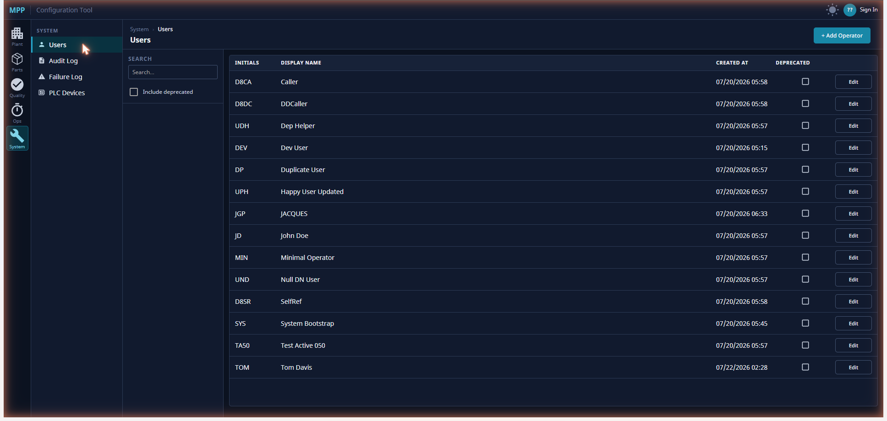
Include deprecated shows retired
operators. Each row edits via Edit.Add an operator
- Click
+ Add Operator. - Enter the operator's Initials (the badge they'll use, e.g.
JPD) and their Display Name. - Click
Save. To retire someone, open their row and deprecate — their past attributions stay intact.
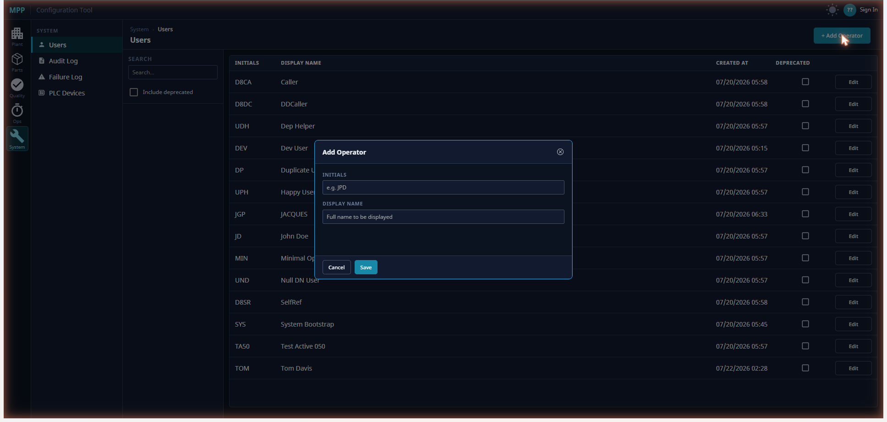
Session timeouts
The Session timeouts (global) panel at the top of the screen sets two plant-wide inactivity windows. They apply to every terminal, not to individual operators.
| Setting | What it controls |
|---|---|
| Operator presence (min) | How long a signed-in operator stays signed in at a terminal without activity before the terminal drops back to the sign-in prompt. |
| Elevation (min) | How long an AD-elevated supervisor session stays elevated without activity before it reverts to ordinary operator access. |
Both are entered in minutes. Change them and click Save timeouts.
Audit Log
The Audit Log is a read-only record of every configuration change — who changed what, when, and the before/after values. You don't configure anything here; you read it to answer "what changed and why?".
What
A filterable, timestamped feed of changes across all entity types, with severity and a human-readable activity description.
When
When investigating an unexpected change, preparing for an audit, or confirming a config edit actually landed.
Why
Honda-grade traceability requires a defensible change history; this is it, and it's written automatically on every save.
Using the Filter
Use the filters on the left-hand side to narrow the feed down to the entries you want. Entity Type narrows it from everything in the Configuration Tool to just Routes, Locations, Tools, and so on.
Severity restricts the feed to info, warning, error, or critical
entries. Info entries record a change being made; warning, error, and critical entries record a
problem with an external integration. Actions the system rejected are not here — those are in
the Failure Log. Start Date and End Date bound the feed to a
date range, and Search matches text anywhere in the entry. Click Apply to run the
filters, or Reset to clear them.
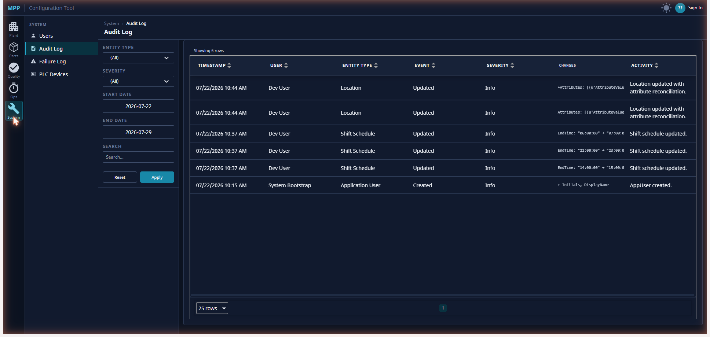
Viewing Change Details
You can access more details about a specific change by double-clicking on its row in the table. Doing this will open a popup that will allow you to compare the old and new value, as well as see the full list of changes that this audit log recorded.
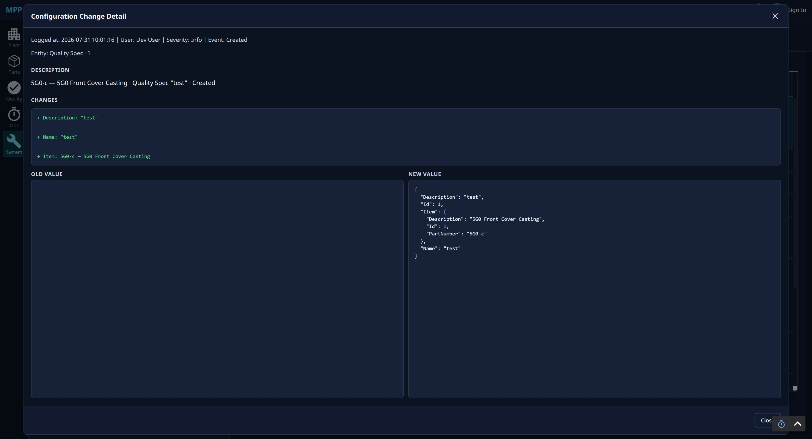
Failure Log
The Failure Log surfaces actions the system rejected — a move blocked, a duplicate LOT name, a FIFO queue that came up short. Keep in mind that only procedural changes are stored here. For errors with integration, check the Audit Log.
What
A read-only feed of rejected operations with the failing procedure, the reason, and who hit it, plus 7-day summaries of the top reasons and top failing procedures.
When
When diagnosing a shop-floor block, a recurring rejection, or a data problem behind a stuck LOT.
Why
Rejections carry the exact business-rule message, so you can tell a config gap from operator error without reproducing it.
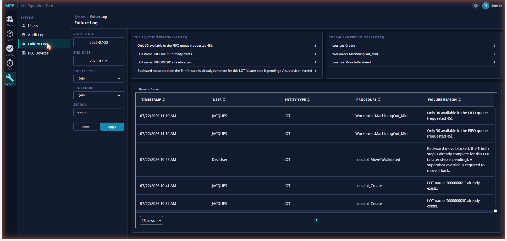
PLC Devices
The PLC Device Mapping screen ties a terminal to the OPC/PLC devices it talks to — scales, assembly PLCs and vision systems — so machine-integrated stations know which device paths to read and write.
What
Per-terminal device mappings: select a terminal, then add the device bindings it uses.
When
When wiring a station to its scale, PLC handshake, or vision system during integration.
Why
The machine-integration layer resolves device addresses through these mappings, per terminal.
Map a terminal's devices
- Pick the station from the Select a terminal… dropdown. The panel below then reads Mappings for the selected terminal.
- Click
+ Add mappingto add a row. - Fill the row in and click
Save, orCancelto drop it.
| Mapping field | What it does |
|---|---|
| Device Type | What kind of device this is — scale, assembly PLC, or vision system. It decides which gateway watcher handles the tags. |
| Device Code | The identifier the terminal uses to refer to this device. |
| UDT Instance Path | The tag path of the device's UDT instance. This is the actual address the integration layer reads and writes. |
| Sort Order | Position among the terminal's mappings when more than one device of a kind is bound. |